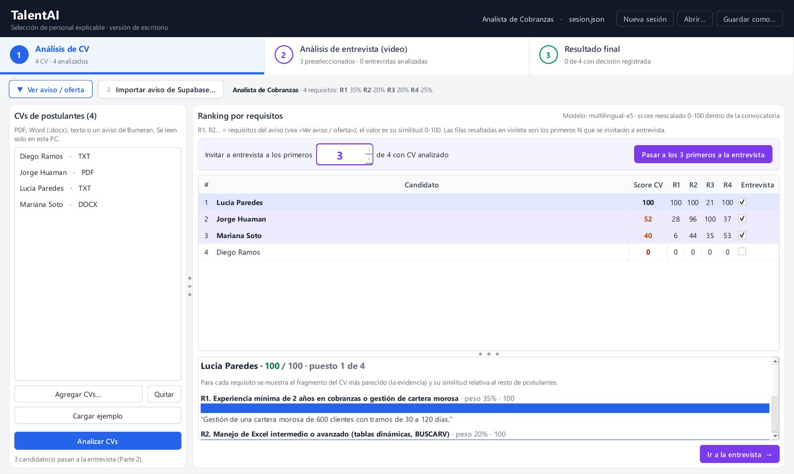

1Análisis de CV
Ranking de CV por requisito, con la frase que lo respalda
El reclutador define el aviso con sus requisitos y pesos (R1, R2…). TalentAI lee los CV en PDF, Word o texto, o importa un aviso de Bumeran desde Supabase, y compara cada fragmento del CV con cada requisito.
- Score de 0 a 100 dentro de la convocatoria y similitud por requisito.
- Para cada requisito, el fragmento del CV que mejor lo cumple.
- «Invitar a entrevista a los primeros N»: los elegidos se resaltan y pasan a la Parte 2.
